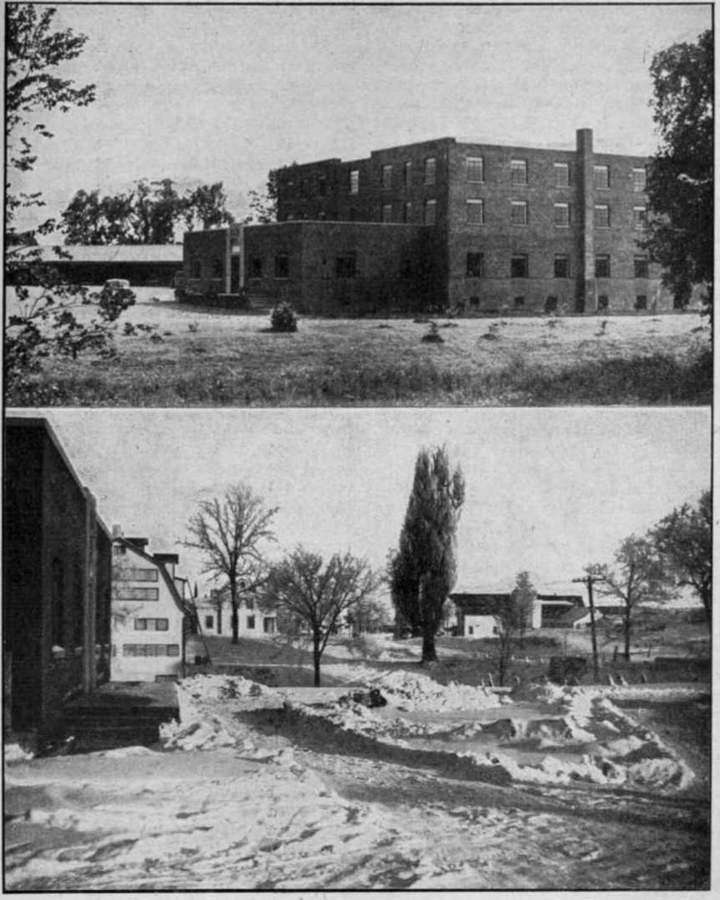
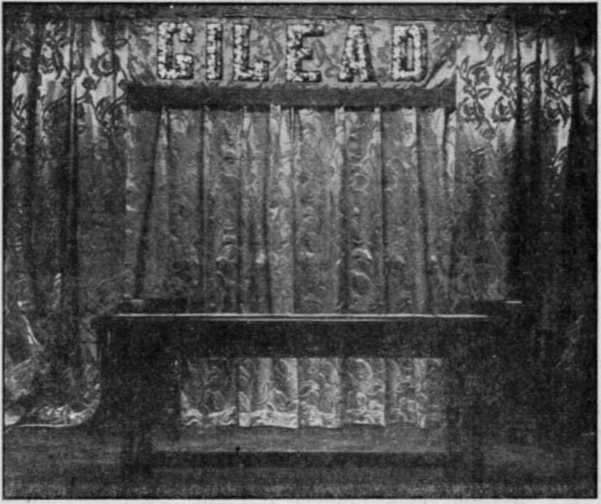
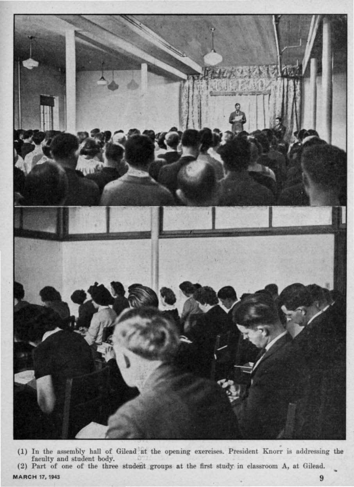
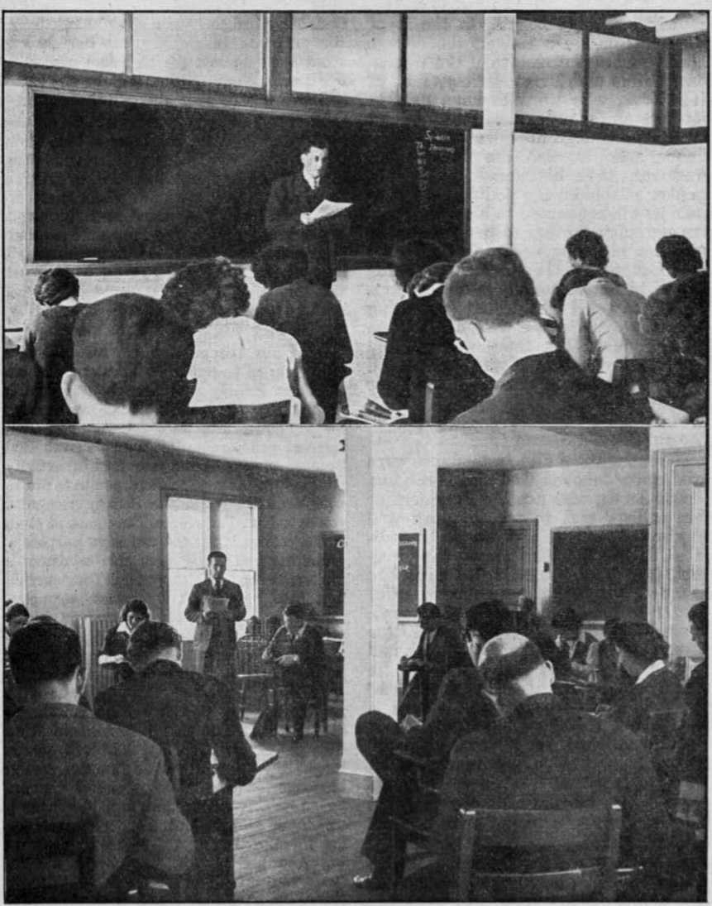

Contents
New World College la Dedicated
«lty Word Is Truth”
“Latin-American Jews Attacked”
Killing Off the Chinese Republic
Presenting “This Gospel of the Kingdom”
The Columnist and the Clergyman
Published every other Wednesday by WATCHTOWER BIBLE AND TRACT SOCIETY, INC. 117 Adams St., Brooklyn, N. Y.. U.S.A.
OFFICERS
Preaident .N. H. Knorr
Secretary . W. E. Van Amburgh
Editor Clayton J. Wood worth
Five Cents a Copy
$1 a year in the United States $1,25 to Canada and all other countries NOTICE TO SUBSCRIBERS
Remittances* For your own safety, remit by postal or express money order. When coin or currency is lost in the ordinary mails, there is no redress. Remittances from countries other than those named below may be made to the Brooklyn office, but only by International postal money order.
Receipt of a new or renewal subscription will be ac* knowledged only when requested. Notice of Expiration is sent with the journal one month before subscription expires. Please renew promptly to avoid loss of copies. Send change of address direct to us rather than to the post office. Your request should reach us at least two weeks before the date of issue with which it is to take effect. Send your old as well as the new address* Copies will not be forwarded by the poet office to your new address unless extra postage is provided by you.
Published also in Greek, Portuguese, Spanish* and Ukrainian. .
OFFICES FOR OTHER COUNTRIES
England 34 Craven Terrace, London, W, 2
Australia 7 Beresford Road, Strathfield, N. S- W.
South Africa * 623 Boston House* Cape Town
Mexico Calzada' de Melchor Ocampo 71, Mexico, X>. F. Brazil Caixa Postal 1319, Rio de Janeiro
Argentina Calle Honduras 5646*48, Buenos Aires
Entered as second-class matter at Brooklyn, N. Y.,
। under the Act of March 3* 1879.
Notandurn <
The Columnist and the Clergyman
♦ Columnist George E. Sokolsky, in the Zanesville (Ohio) News, of October 2,1942, defends his use of the Bible’s wisdom, in his writings, against a critical minister. He says:
Many clergymen these days devote their sermons to current literature and current events.
Tho particular clergyman resents . . . my using the Bible to make a point. Yet, it is as natural for me to turn to the Bible as it is for him, perhaps, to turn to a modern writer. I find a wealth of analogy there.
After all, five thousand years of human experience is of greater value than a world which commenced in 1933 and has never been right since.
I am sure that one of our major difficulties —and when I say “our”, I mean the whole of mankind—is that we have lost guidance, moving rapidly but without compass.
The end of the nineteenth century threw God over as a guide and accepted Science, but Science offered only facts but no guidance, knowledge but not wisdom, details to the minutia of the electron but no philosophy of life.
And in the twentieth century we accept the great teachings of economics and sociology and our prophet was Karl Marx- -and where are we"? We are confused and perplexed. ~We are like madmen, hating each other.
Every miserable prejudice and pettiness of the most primitive savage has become a way of life adopted by millions of people, and praised as an ethical procedure.
Two thousand years of slow, painful effort to lessen the bestiality of man, to civilize him and soften his nature, has been wiped away by the resurgence of brutal materialism.
And yet, it is a clergyman who says in a letter, “The bringing the Bible to hear evidence for him, [struck me] as disreputable.” Where shall one turn these days for guidance ? To politicians who deceive? To clergymen who have become politicians?
I turn to the wisdom of the ages and find there a transcendent comfort.
“And in His name shall the nations hope.”—Matthew 12:21, A.R.V.
Volume XXIV Brooklyn, N. Wednesday, March 17, 1943 Number 613
New World College Is Dedicated
ANEW WORLD of righteousness is at hand. As one of the visible evidences of its imminence a college of the highest learning was dedicated the first day of February, this year. The opening of this college in the inidst of a world engaged in total war resulting in destruction of many institutions of higher learning and the closing down of others is quite in the opposite direction from the course of the old world. While yet at war the governments of nations, states and cities are planning for the postwar period of this same old world. The new college, however, has not been established to aid in such postwar arrangements. It represents entirely the New World which God himself will establish \yhen the postwar setup of men goes down.
The warring nations are already on the march to a still greater conflict, the battle of Armageddon. After the present global war ends with victory for the United Nations as it is hoped, and the postwar “new order” sets in, the nations will keep on with their march to the grand climax, “the battle of that great day of God Almighty.” It marks the final end of the old world. Then comes the new world, with its Theocratic Government of everlasting life, happiness and prosperity on earth in an enduring peace.
All persons of good-will who discern the “signs of the times” and who desire to survive the great world cataclysm and to enter into the. unspeakable blessings of the righteous new world need now to be informed concerning these tremendous events which face us all. Being enlightened and given the opportunity to act intelligently, such seekers of life and happiness can make a choice and take their stand for God and his Theocratic Government before Armageddon’s fight. The new college is dedicated to the work of educating the people in these matters affecting their eternal destinies. Hence the establishment of the college is not an indication that the battle of Armageddon is farther off than has been believed hitherto by students of Bible prophecy and the times, but is a strong indication that the time till that battle is short. By inaugurating the college its backers are not seeking to extend or lengthen the time until Armageddon, but are striving to speed up the campaign of education which must be carried on world-wide before the great tribulation breaks.
AH engaged in this work of enlightening humankind concerning the new world must intensify their efforts because of the shortness of the time that remains. To this end the New World college has been set up at this late date. During the sixteen centuries of “Christendom’s” existence, and now particularly since World War I, religion has failed to give the people the needed information. The New World college is not a religious affair, but is Christian, and hence meets the people’s greatest need of the hour.
Study of sacred prophecy indicates that God has a fixed time to begin His fight at the battle of'Armageddon; as it is written in the maxims of the wise man Solomon: “To every thing there is
a season, and a time to every purpose under the heaven: a time to love, and a time to hate; a time of war, and a time of peace/’ (Ecclesiastes 3:1,8) Therefore, whatever any creatures on earth now do could in no wise move forward the date of Armageddon or push it back. At most, students of the Scriptures can | only take cognizance of the evidence of Armageddon’s nearness and can then apply themselves to the utmost and in the most effective manner to get the allotted work done on time. The interim between the close of World War I in 1918 and the beginning of tire battle of Armageddon constitutes the time period by which Jehovah God Almighty shortens the days of tribulation. Concerning this the great Master prophesied, saying: “For then shall be great tribulation, such as was not since the beginning of the world to this time, no, nor ever shall be. And except those days should be shortened, there should no flesh be saved; but for the elect’s sake those days shall be shortened.” (Matthew 24:21,22)- It is therefore urgent that all who want life in the new world avail themselves of God’s provision for salvation which He causes to be published during this period of shortening the days. Thereby such ones may be hid in the day of His anger and may be of ‘that flesh which is saved’ during Armageddon. . '
It is plain, then, that the establishment of the New World college is not by men, but is the provision of Almighty God at His due time and according to His infinite mercy to mankind. The college is no matter of passing interest, but should command the attention of all persons seeking the way of life on earth under God’s kingdom. Such will therefore read with keen interest and enjoyment this account of the dedication and opening activities of the Watchtower Bible College of Gilead.
Why this institution ranks as a college, and why it has been so named, we leave to the president thereof to explain, as follows:
The word “college” appears in the Bible record at 2 Kings 22:14 and 2 Chronicles 34:22, in connection with the typical Theocracy over the Israelites. It was at the capital city, Jerusalem. The word “college” is here translated from the Hebrew word mishneh, which means literally “doubling or repeating”. If the word here means an institution of learning, where the prophetess Huldah dwelt, then it marks a “college” as a, place where instruction on special subjects is repeated but in an advanced and more intensified way so as to increase one’s familiarity, capacity and efficiency therein, and thus doubling one’s ability. It is a secondary institution, and hence farther advanced than a primary one. Such, indeed, is the Watchtower Bible College of Gilead. It is so called because it is operated and maintained by the Watchtower Bible and Tract Society, Inc., of New York, and the college faculty of instructors are ordained ministers who are representatives of the Society. Though listed according to the law of the land as a -“religions institution”, it is in fact a Christian college for Bible training.
The name “Gilead”, which marks the main building of the institution, is significant. It means “heap of witness”. The first time a place was named “Gilead” was when Jacob gathered stones into a large heap and called it “Gilead”. There his father-in-law Laban said to him: "This heap is a witness between me and thee this day.” “Therefore was the name of it called Galeed [Gilead]; and Mizpah; for he said, The Lord watch between me and thee, when we are absent one from another.” (Genesis 31:48,49) There a htjap of witness was made of stones, symbolizing a covenant between Jacob and Laban. Jacob had served his time under Laban to receive Laban’s two daughters in marriage and he was leaving Syria, never to return; and this heap of witness was a testimony to an agreement that L^ban would not pass by there unto Jacob’s territory, nor would Jacob pass by it unto Laban, for harm.
It was lat^r at Gilead, and in Mizpah (meaning “Watchtower”), where Jephthah
(1) Summer view of the college building, Gilead, from the northeast.
(2) Looking northward from the receiving platform of Gilead on the opening day of the college.
Four hundred yards up the highway is building No. 1, where classroom C is located.
assembled his troops and began to drive back the Ammonites and, won the fight for the right of Israelites to worship Jehovah God in spirit and in truth. Jehovah’s witnesses are engaged in a like fight now against totalitarian forces of encroachment.
Two years ago this building was named ' < “Gilead”. Today we see it being used in the | preparing of ministers who, by the Lord’s grace, will, in all parts of the world, pile up a heap of witness for the Kingdom and for the vindication of Jehovah’s name.
This is a college of the highest learning, Theocratic learning concerning the Most High God, Jehovah, and His capital organization under Christ, arid the operation of its visible part now on the earth. Hence it is not a college of so-called “higher learning” according to the standards of this world. .
The original Gilead lay in mountainous territory east of the Jordan river. Gilead, as the main building of the Watchtower Bible College is named, is located in the highlands east of the southern end of Lake Cayuga, a lake forty miles long and three miles wide, one of the “Finger Lakes” famous in Indian lore. It nestles in the beautiful south-central section of New York state. The mountainous region of ancient Gilead was highly adapted to cattle raising. The college building of Gilead is located on a 701-acre area called “Kingdom Farm”, and where a considerable number of cattle are raised, together with other livestock. The land is very fertile, and was acquired especially for the purpose of raising food for the headquarters family of the Watchtower Bible and Tract Society at Brooklyn, N. Y., and also to support and feed the student and faculty personnel of the college, a total of approximately 375 persons. Hence it has been operated in behalf of educational interests, in harmony with the chartered purposes of the Society. Gilead is ideal for a place of study and concentration; it is quiet and far removed from the distractions of the noisy city, and allows the utmost tp be obtained from the lessons studied.
The many magnificent and most modernly equipped farm buildings that spot the entire countryside on both sides of the main highway through Kingdom Farm present a very pleasing landscape.
The building Gilead faces the direction of the sunrise. It houses a farm family, and also the teachers and most of the college students. It is a fireproof brick-and-concrete building, of three stories in height, with a commodious basement, 130 feet long and 80 feet wide. It is plain-looking on the exterior, but within is replete with all up-to-date conveniences contributing to the needs and comforts of those it houses. At the front there is a broad concrete receiving platform, with steps at each end. A main central doorway marks Gilead’s facade, and over it is a copper plate on which is engraved the name “GILEAD”, and underneath, in a marble block, is “Kingdom Farm 1940”. As one enters .Gilead, to the left of the broad hallway is the farm servant’s office, behind sliding glass windows. To the right is a beautiful partition of frosted glasswork, with two windows, one for the farm commissary, and the next for the college, registrar. By a swinging gate one enters into the registrar’s department. Immediately next thereto is located the college library, the shelves of which contain valuable reference books needed for the use of the faculty and students.
Passing to the end of the corridor one enters into the college assembly room, 65 feet by 48 feet, and large enough to seat 300 persons. At the eastern end is a large carpeted podium, of two steps up, on which stands an ornate walnut table, six feet long, on which is a golden damask throw. On the wall immediately behind are gorgeous damask drapes of golden brocade. In the center thereof, overhead, is a banner of like material, with gleaming golden block-letters reading “GILEAD”. On pulling a cord the central drapes part, revealing, underneath, a blackboard for the service of any instructor or lecturer demonstrating on the platform. On the ceiling, just in advance of the speaker’s table, there is a battery of four long, fluorescent illuminating tubes that produce a power light without glare. Other lights with elegant refracting mantles are so spaced as to give evenly distributed light throughout the auditorium. Natural light is allowed by large French ~ style casement windows which swing outward
when opened. A huge The podium in the assembly hall of Gilead.
fireplace with sloping
shoulders also adorns this northern wall. books. Thus each room is designed to
The seats are not fixtures, but movable, and are put in place in such number as occasion requires.
Flanking the assembly hall to the left, or south side, are classrooms A and B, with a spacious lounge parlor in between. This parlor has a corresponding fireplace and is provided with settees, lounges, rockers, tables, floor lamps and bookshelves for the comfort of the students and for quiet study. Classrooms A and B are of the same size. In addition to electric light fixtures and steelframed' windows in each room the interior walls are topped with a glass frame two feet high just below the ceiling, to admit of maximum radiation of light. On the' western Avail, alongside the instructor’s desk, is a blackboard, twelve feet long. Each room is also equipped with thirty-four chairs, each having a flattop right arm on which students can rest their writing material to take notes during class periods. A frame underneath the seat holds their
accommodate a study class of the maximum number considered to be the best for each student to receive the proper individual attention.
A college must eat. A partition at the western end, pvith like glass topping, separates the’ assembly hall from the dining room. Here are ten lengths of tables, sufficient to accommodate 150 persons at one time. A large motto, “Jehovah Is Our God,” graces the western wall. The large kitchen, with adequate equipment such as dishwashing machine, refrigerators, etc., is to the right .of the dining room, and to- the left are the college stockroom and a linen room.
From the dining room one stairway leads to the basement, and another to the dormitory on the second and third floors above. The basement is of sturdy concrete work, with the same floor dimensions as of the first (or ground floor) above, and takes care of several departments, such as a hospital, storage,
The podium in the assembly hall of Gilead.
laundry, etc. The second and third floors are divided into two wings with an open court between the wings, so as to permit each room of the dormitory to have outside illumination and ventilation. Each floor of each wing is equipped with adequate baths and toilet facilities I for the students. Each room accommo-* dates two students, and has a lavatory with running hot and cold water, and steam-heat radiator units. Comfortable single beds and other necessary furniture for student activities make each room a cony place.
A. third classroom, C, is located in what is called “Building No. 1”, about four hundred yards north of Gilead, on the opposite side of the highway. This requires students to get out-of-doors in order to pass from this classroom to those at Gilead, or vice versa. Building No. 1 also contains a number of rooms occupied by young men. As classroom C is where public Bible speaking is taught, the instructor has arranged the 34- seats in two concentric circles, so that each student speaking always has to face and speak to an audience when reciting.
Ever since the announcement was made, in the 1.943 Yearbook of Jehovah’s witnesses, of the Society’s purpose to open up a Bible college at Gilead the eyes of God’s people throughout the country have been turned thither, and their prayers have arisen for the divine blessing and guidance upon all the preparations and arrangements.
Early in January the Watchtower office at Brooklyn began sending out detailed questionnaires to all full-time ministers, pioneers, in the United States whose record showed they met the minimum requirements for qualification as students. One requirement is that they must have been full-time Kingdom publishers preaching the gospel from house to house for at least two years. From among the number of quest ion -naires filled in and returned a further selection was made of those showing the greatest fitness for the college course and the work in other fields for which it would train them. The one hundred selectees constitute twenty married couples, twenty-nine young single men, and thirty-one young single women. From the expression made later by these tried and tested pioneers their joy was exceeding great on receiving notice of their selection and invitation to enter the college. These devoted men and women are all ordained ministers direct from the firing lines, where the;* have been valiant fighters for the New World. In the course of their years of action afield in declaring God’s name and advertising His King and kingdom they have endured hunger, cold, storm, perils, uncertainties, and all manner of hardship and privations in order to reach the people with the Kingdom message. They have faced demonized mobs and have been assaulted, arrested, taken into courts, and have suffered imprisonments, just as the apostles of Jesus Christ themselves experienced in their work as Jehovah’s witnesses.
All provisions were made by the Society for these pioneers to travel from their various territories to Gilead. This is in harmony with the arrangement for the Society’s conducting this Bible college at absolutely no expense to the students. January 28, the first of the four registration days, experienced low temperatures and a heavy fall of snow in New York state, making travel very difficult and inconvenient. For days previous to this the pioneers were on the trek from all sections of the country, all faces turned toward Gilead. On the first registration day 26 put in appearance, from far-distant California, Michigan, and other states. This number increased to 67 on the second day, including arrivals from New -Mexico, Arizona, Nevada, Louisiana, Texas, Missouri, Maine, etc. The third day the number climbed to 91; and on Sunday the last two arriving to
(1) In the assembly hall of Gilead at the opening exercises. President Knorr is addressing the faculty and student body.
(2) Part of one of the three student groups at the first study in classroom A, at Gilead.
MARCH 17,1M3 q
complete the full quota of 100 put in appearance within the hour preceding the evening’s Watchtower study in the assembly hall. The college entrants •arrived at all times during the day and nighty even as late (or early) as 3:30 r a. m., at Ithaca’s railroad and bus sta-। tions. They came by private automobile, * in spite of ration restrictions on gas and tires; because they were making trips vital to Kingdom interests, and not for pleasure jaunting, the ration boards gladly granted the necessary gas and oil to complete the trip. They made the trip without accident, although encountering blizzards and other extreme conditions along the road. Others came by bus and train, over long distances, to reach the college in time. All made it on time!
Each arrival was required to. fill out and sign a registration blank in the registrar’s office. He was then given a pink card with the class schedule of the college printed thereon, and naming the instructors of the faculty, and indicating the eight subjects for study, also the three study groups, the class periods of each day, and the order of studies of each of the three student groups daily. Having registered and received a study-group assignment, each student was then assigned a room in the dormitory, and also a definite seat in the dining room. The college term not yet having begun, they were then given various chores and duties to do about the college and Kingdom farm.
The daily regimen for the students is to rise at 6:30 a. m., when the first bell of the day sounds. This allows a halfhour to prepare for the morning assembly in the dining room. Here the day’s instruction really begins. From 7:00 to 7:20, approximately, there follows a discussion by the college students and the Kingdom Farm family on the daily text published in the Watchtower’s Yearbook. The chairman, who, in the absence of the Society’s president, is the Kingdom Farm servant, calls on the various young men for questions and comments based on the text. Following the reading of the printed comment thereon, prayer is offered in behalf of the day’s activities at the college and farm and by. all Kingdom publishers throughout the • earth. Breakfast is served immediately thereafter. Dinner comes at 12:15 p. m., and supper at 6: 00 p. m. The foodstuffs, vegetables, meats and dairy products in ample quantity, are provided largely by the Kingdom farm; and all rationed articles are purchased according to Government regulations. Evening .meetings or private study in the rooms occupies the evening hours till retirement. At 10:30 p. m. all must retire and lights must be extinguished in the rooms. Sunday night all dormitory rooms of Gilead and adjacent buildings were filled to capacity by college and Kingdom Farm personnel and visitors.
Monday, February 1, dawned cold, •with heavy leaden skies and snow-clad fields at Kingdom Farm. The sun was not yet up when the college dedication exercises began, at S a. m. War Time, the hour which thereafter begins the daily class sessions of this institution of learning. In Gilead’s assembly hall all was earnest and eager expectation on . the part of the 161 there gathered. -Everyone sensed the importance of the occasion, realizing that here was an epochal event. which would mark a decisive step in the advancement of the interests of God’s kingdom of the New • World. It reminded one of the assembly of the 120 faithful Christians in the upper room at Jerusalem on the day of Pentecost, A. D. 33, as they awaited God’s outpouring of His holy spirit on them, which would equip them to preach the good news of His Righteous Government, beginning at the sacred city and' spreading to the four corners of the earth. .
The radiant faces of the one hundred college students were especially an
(1) The instructor in Theocratic field ministry outlines the course of study, in classroom A.
(2) In classroom C the instructor in public Bible speaking details the study course. Note the students are seated in two concentric circles.
inspiring sight to behold. In the front row of seats were ranged the college faculty and also directors of the Watchtower Bible and Tract Society, Inc., of 'New York, who were to have part in the morning’s program. Promptly at 8 a. m. the college president, Mr. N. H. t Knorr, who is also the Watchtower ** president, took his stand behind the speaker’s table on the podium, the vicepresident being seated to his left. There was no noisy fanfare to inaugurate the program, no pompous procession led by solemn-faced college faculty heads garbed in long black robes and square-topped, tasseled college hats marching down the aisle of the assembly hall to blaring music. No, there was nothing here in evidence to glorify or to call attention to human creatures and their attainments.
The thoughts of all in attendance were fixed upon Jehovah God and His King, Christ Jesus, who are the Founders of this college and to whose glory and service this college was now to be dedicated. In recognition thereof, the president, Mr. Knorr, first called upon the instructor in Bible research to offer prayer to the great Theocrat, Jehovah. Then followed an absorbing dedication speech, delivered in a most sincere and forceful manner by the president. He first pointed out that it is not to the credit of any man that the college is established. He showed the purpose of the college, making it very apparent that it is no theological seminary for the incubating of priests of religion. Addressing himself directly to the student body, he said, among other things:
In your ease, you are being given further preparation for work similar to that of the apostle Paul, Mark, Timothy and others who traveled to all parts of the Roman Empire proclaiming the message of the Kingdom. They had to be fortified with the Word of God. They had to have a clear knowledge of His purposes. In many places they had to stand alone against the high and mighty of this world. Your portion may be the same; and God will be your strength thereunto.
There are many places where the witness concerning the Kingdom has not been given to a great extent. The people living in these places are in darkness, held there by religion. In some of these countries where there are a few witnesses it is noted that the people of good-will hear readily and would associate themselves with the Lord’s organization, if instructed properly. There must be hundreds and thousands more that could be reached if there were more laborers in the field. By the Jjord’s grace, there will be more.
It is not the purpose of this college to equip you to be ordained ministers. You are ministers already and have been active in the ministry for years. This is a requirement for entrance into this college. You have received your ordination from Jehovah God. Because of your works, your faithful activity, your fighting as good soldiers, you have proved your ordination and the Society recognizes you as ordained ministers. The course of study at the college is for the exclusive purpose of preparing you to be more able ministers in the territories to which you go. Your curriculum here, conducted by select, competent instructors, will include a course in college arithmetic, instructions on shipping and use of the Society’s forms and reports; manner of dealing with government officials; the required international law; a course in English and grammar to improve you therein so that you will be able to present the Kingdom gospel commendably. You will also be taught the essentials of the needed foreign language, enabling you to master the language quickly when you get to the fields to which you may be sent. You as students will get the most out of the course only as you put your best into it. You should put into the course everything that you possibly can, because you want to be fully equipped for Theocratic field ministry and the missionary service in which you will engage.
All of the above-named subjects must be studied carefully by you, but your principal training will be in Bible research and public Bible speaking, and the' understanding of Theocratic organization instructions. You are not being trained to become “Branch servants" or to direct the work in certain countries as the Society’s special representatives; but some of you may be appointed as such in due time, if that be the Lord’s will, and the work warrants it.
Your principal work is that of preaching the gospel of the Kingdom from house to house as did Jesus and the apostles. When you shall have found a hearing ear, arrange for a back-call, start a home study, and organize a company of all suchlike ones in a city or town. Not only will it be your good pleasure to organize: a company, but you must' help them to understand the Word, strengthen them, address them from time to time, aid them in their service meetings and their organization. When they are strong and can go on their own and take over territory, you can depart to some other city to proclaim the Kingdom. From time to time it may be necessary for you to return to build them up in the most holy faith and straighten them out in the doctrine; so your work will be that of looking after the Lord’s “other sheep”, and not forsaking them. (John 10:16) Your real work is to help the people of goodwill. You will have to use initiative, but looking to God’s guidance.
The speaker then referred to the Master’s words at Mark 10:28-30: “Verily I say unto you, There i^ no man that hath left house, or brethren, or sisters, or father, or mother, or wife, or children, or lands, for my sake, and the gospel’s, but he shall receive an hundredfold now in this time, houses, and brethren, and sisters, and mothers, and children, and lands, with persecutions; and in the world to come eternal life.” Tears welled up in the eyes of many as President Knorr, from a full heart, showed how those words of the Master have applied and will further apply to the college students after graduation and when launching out on their service in foreign fields. He concluded by saying:
Ahead of you now are five months of intensive study and work. During these five months you will undoubtedly have a most blessed fellowship one with another. . . . Your conscientious ministry here at Gilead along with your study will be a blessing to you and your brethren,. Seek the wisdom which is from above. Use all your talents, your faculties, and your abilities to the best advantage during your study here. Jehovah says: “Ye are my witnesses.” Therefore you may be confident that Jehovah’s rich blessing will be your portion during these tw'enty weeks according to the efforts you put forth to be such witnesses, to the honor of His name.
Mr. Knorr then introduced the vicepresident, who is also counsel for the Society, and who addressed the assembly for ten minutes. He pressed home the point that Jehovah does not do things such as establish a school through His earthly organization in vain; and that His purpose could now be clearly seen in acquiring the property and constructing the building where the college is operated. The college was established to give the highest training in the law of God and a necessary acquaintance with the laws of the land to equip the students to represent The Theocracy in those countries where they will be sent. They were likened to ambassadors of one nation in another country, and which high office as ambassadors for The Theocracy will of necessity require of each a good knowledge of the language, laws and customs of the country where the ambassador is stationed. The training course at Gilead would provide the necessary polish and education to thoroughly qualify them to discharge their duties as such ambassadors. The supremacy of God’s law over the law of worldly nations being emphasized, the college course would enable them to determine the right in conflicts between the laws of men and of God and to act accordingly. The facts show that the standards of this college would, in the eyes of God, be much higher than those ■of worldly colleges of “higher learning”, so called.
• The secretary-treasurer of the Watch-i tower Society was then invited to speak. * This tall, aged gentleman, an octogenarian who has served in this official capacity under three successive Watchtowerpresidents, first called attention to the college as the provision of the Lord and to be maintained entirely at the expense of the Watchtower Society and without any cost to the students. He gave them straight fatherly advice in the “admonition of the Lord” about faith and the importance of attending to their own business and applying themselves un-dividedly to their studies. His concluding remark amused everyone, when he said that his only regret was that he himself could not attend the college. Then with a “God bless you all” he stepped down off the podium.
Another of the Watchtower Society directors was asked to speak. “The Watchtower Bible College of Gilead is no experiment,” he began; “Jehovah God does not indulge in experiments.” Quoting Acts 5:38,39, he emphasized that this work was not of man, but of God, and therefore could not be overthrown by those who fight against God. In A. D. 1914 the heavenly Kingdom of the Greater-than-Solomon, Christ Jesus, began, and in the fourth year thereafter He came to God's temple for judgment. The twenty-year period beginning in spring 1918, and ending 1938, paralleled the twenty years of Solomon’s reign in which he built the temple of Jehovah at Jerusalem and also his own palace and judgment hall, after which Solomon carried on a great constructive program throughout the nation. Corresponding to this, it was the Lord’s due time for the Watchtower Bible College to be established now, after A. D. 1938. Its establishment, rather than indicating that the battle of Armageddon is farther off than we had believed, is actually a proof that the fixed time for that battle to begin is near. Hence the need of increasing the efficiency of God’s organized people to accomplish His work in the brief remaining time. The Bible text for February 1 was from Judges 11:34, regarding the daughter of Judge Jephthah; and the speaker pointed out that, whereas only eighteen of the college student body professed to be anointed members of the “body of Christ”, the Greater Jephthah, eighty-two of the one hundred students were of the modern Jephthah’s daughter class.
Next President Knorr called upon his secretary, to read a letter addressed to him and the faculty and students of the Watchtower Bible College of Gilead. It was from the headquarters family of the Watchtower Society of Brooklyn, N. Y., and they, the Bethel family, expressed their rejoicing over what was now taking place. They also called attention to the prophetic picture of Jephthah’s daughter and said: “May this day begin the sounding forth of the high praises of our God from Gilead, which will go to the uttermost parts of the earth and ring to the highest heaven.” An assurance of their daily prayers in this behalf concluded the letter. It was much appreciated.
President Knorr then introduced the college dean and other members of the teaching faculty and described their courses of instruction. Each teaches two subjects. On account of the dedication exercises the study periods of the day, regularly 40 minutes in length, with a 10-minute intermission, were to be curtailed. Then he dismissed the assembly by offering a fervent prayer to the Most High God, the supreme, invisible Director of this Bible college. Within ten minutes, namely, at 9:35 a. m., all the students and their instructors were at their places in their respective classrooms.
During the day President Knorr con* ducted the directors on a tour of inspection of the study classes while in session. Everything was proceeding in a most gratifying manner. It was noteworthy what enthusiasm and keen interest in the progress and attainment of the students all instructors displayed. In turn, the students made due response, showing the greatest desire to co-operate with their instructors and to improve their golden opportunity of learning and fitting themselves for enlarged service in God's visible organization. The instructors demonstrated a different approach to their subjects of instruction from that of college professors and teachers in a worldly institution. The course of instruction, therefore, promises to be most helpful and to make for the speediest progress in learning during the college term of twenty weeks’ duration. It ■was manifest that the spirit of the Lord God was upon both instructors and students, and they all certainly need it, because the course is a “very stiff” one. There are eight periods of instruction a day, for five days a week.
All study, with no diversion or physical exercise, is not a good thing. Instead of providing for such exercise in the way of gymnasiums and athletic events, concerning which the apostle Paul says, “Bodily exercise profiteth little; but godliness is profitable unto all things” (1 Timothy 4:8), the weekday schedule calls for three hours (3-6 p. m.) of prq-ductive work by each student, at some essential chores and duties about the college and the Kingdom farm. Some students are assigned to serve in the dining room, others in the housekeeping, and others in the egg department, the barns, the fields, landscaping, etc. Such helping to maintain the college and the productivity of the Kingdom farm for their own support is not for the purpose of exploiting the students, but is to enable them to receive valuable training and to relieve the additional strain of the greatly increased number on the farm and to provide partially for their own sustenance from the yield and conveniences of the farm. Furthermore, on this work they will be graded by the college faculty as well as on their studies and behavior, as to their efficiency, cooperation, neatness, reliability, initiative, and tact.
Each Monday evening all students are required to attend the Advanced Course in Theocratic Ministry, conducted in the general assembly hall, and in which the members of the Kingdom Farm staff also participate. All receive the half-hour instruction talk and a quiz on last week’s lecture, the assembly then dividing up to go to four halls. Here the male students deliver short Bible talks, followed by constructive criticism by the instructors. Each Thursday evening the weekly service meeting is held, and on Sunday evening an hour’s study of The Watchtower, the people of good-will in the surrounding community being free to attend this. At each of these meetings the college students are given practical training in the matter of conducting study meetings and addressing assemblies. There is a rotation of chairmen of these meetings, also of those who read aloud the questions for study and the paragraphs of the lesson and who deliver speeches at the service meeting.
On Saturdays there are no regular study classes, but students who desire to consult their instructors for help and information may do so in the morning. They have the afternoon off . to attend to personal matters or to engage in the field service then as well as in the evening, particularly in offering the maga- -zines, The Watchtower and Consolation, on the streets and in the stores of the near-by cities, such as Ithaca, of 30,000 inhabitants, Cortland, and others. Every fifth Saturday will be an examination period; and any student failing to make the grade required at the first midsemester examination will be discon-tinned from the college and returned to regular pioneer work in the United States. For grading students, the point system is used: “A”, for excellent, equals 3'points; “B”, for superior, 2 points; “C”, for average, 1 point; “D”, for pass
, ing, 0; and <fE”, for failure, -1.
t Sundays are not left open for idleness. The curriculum calls for “applied missionary service” during the day, putting into practical effect the things which they have learned at the college as to preaching the glad tidings from house to house, making return visits upon the interested people, and conducting model Bible studies and book studies in their private homes. This is important, because the student grading takes into account their records made in this Sunday activity.
At the noon and evening meals of this memorable Monday the students effervesced with joy and appreciation over their privileges of study, and the method of instruction, and the comprehensive course of study ahead of them. "Attending college is just wonderful 1” exclaimed one young lady. Quite a number enrolled at Gilead are also graduates of worldly universities and colleges, and several of these remarked upon the superiority of the training and education they were beginning to receive here at Gilead. The faces of the instructors themselves mirrored great pleasure and elation at the day’s accomplishment. Said the dean of the college, who is a graduate of Tulane University and also a licensed lawyer of experience: “I’ve taught schools in Louisiana, and also taught in college, but I have never had any glasses of students like these here.” That night, at the Advanced 'Course in Theocratic Ministry, the dean delivered the talk of ' instruction on “How to, Study”, which was the closing exercise of the opening day. Then, after the usual Bible talks by the students concurrently in the four different lecture halls, the students and
Kingdom Farm family reassembled in the main hall. There President Knorr gave them some final words on college life, as to rules governing their conduct in group association, mutual helpfulness and consideration of one another, and the, Lord’s organization, which they represent. .
It was going on ten o’clock when the assembly was dismissed, making it a full day indeed. With great joy and gratitude to the loving Giver of all good and perfect gifts those present then retired to their rooms and other places of abode to take a blessed night’s rest, to refresh them for the greatly anticipated next day’s round of privileges.
The Watchtower Bible College of Gilead is now a reality, a going concern. It is in verity a New World college. Being devoted to the purposes and service of the Theocratic Government of the Most High God, it is an institution of learning of the highest standard. This.college is no mere accident; it is a divine provision. Already it has begun to make its influence felt in its locality as the students unitedly go forth on week-ends and take the cities and towns by storm, publicly and from house to house declaring Jehovah’s name and advertising the King and the Kingdom, and proving themselves able ministers of the gospel.
It is to be expected that the influence of the college, under God’s blessing,-protection and guidance, will make itself felt to the ends of the earth through the sending forth of its graduates. In view of the impending battle of Armageddon signaling the old world’s dismal end, the work of Gilead’s Bible college is one of immediate necessity and of defense of the people against destruction in that battle. Hence the college work is an essential work of the highest type and is of public convenience and interest. It is certain to serve, under Christ Jesus the King, for the vindication of the glorious name of Jehovah God, its Founder, c
-John 17:17
Humility in Action
THE <?laim that the Roman Catholic Hierarchy, or any of its representatives, can bring a lasting peace or reconstruct the world for man’s happiness or benefit, when all students acknowledge fhat the Papacy is the most notorious war-fomenter of all time, would ordinarily be discounted as a ridiculous insult to intelligence, were it not for one thing: such claim is made in the Lord’s name. It therefore becomes the height of blasphemy, as well as the human utmost in self-exaltation. Such usurpation of God’s name by an organization with the longest criminal record found in history’s annals will not be overlooked by the Great Leveled when punishment for her other crimes is duly exacted. “Though they dig into hell, thence shall mine hand take them; though they climb up to heaven, thence will I bring them down.”—Amos 9:2.
In contrast with the vain,, presumptuous conduct of earth’s great ones, observe, if you please, the humility of the Lord’s servants in action. The humblest class of men upon earth are His witnesses. Faltering not from the buffetings and assaults of hoodlums and rabble-rousing priests, they rejoice in the privilege of calling at the lowliest hut with Jehovah’s message. They ask nothing in return. If those who love the message wish to contribute to the work, that is their privilege; but if brings no personal gain to Jehovah’s servants. His witnesses are kind to those1 who hate them, and continue to call on many who despitefully use them. (Lukd 6:27,28) It is humility before the Lord that causes Jehovah’s witnesses to bring the good news to all, because they surely could have no personal reason to submit to abuse and beatings. The human tigers who pounce on the sheep of God’s fold would, except for God’s command to His witnesses, be avoided by a wide margin. (Matthew 24:14) But when any misguided ones turn from their course of evil and wuckedness, as did the apostle Paul, then Jehovah’s witnesses gladly forgive and forget anything done in the past, and thereby acknowledge the rule of the Humblest of men, to wit: “Forgive us our debts [trespasses], as we for-, give our debtors.”—Matthew 6:12,14,15.
They are the humble friends of the people. They serve the best interests of the people in this, that they warn them of the coming disaster that they might save themselves from that disaster. Surely to deliver God’s warning of the approaching calamity of Armageddon is a service of kindness and good-will; and when met, as often, with sticks and stones from the very ones who are most endangered and most in need, the faithful ambassadors of Christ are rendering a service of mercy, humility, and selfabasement. Less humble men and women would long ago have abandoned a task so frequently thankless.
It should be remarked that the greatest blessing of all, The Theocracy, may be grasped only by the humble. “Blessed are the poor in spirit; for theirs is the kingdom of heaven.” (Matthew 5:3) “Then shall the King say unto them on his right hand, Come, ye blessed of my Father, inherit the kingdom prepared for you from the foundation of the world.” (Matthew 25:34) The test of humility is therefore upon all who apply for life. One’s diversion from this supreme human blessing will result from scorning God’s messengers. O men of good-Svill, do not forfeit the opportunity for endless bliss because the Devil has caused the finger of reproach to be pointed at His people, who alone are commissioned to inform you of that happiness ahead. Jehovah permits that
test on you. His blameless witnesses have done nothing wrong; and if you join their haughty persecutors, such will exclude you from “lovers of righteous' ness”. Seek the Kingdom, though knowledge comes by way of His witnesses.
. ’ —Matthew 6 : 33.
| You who love right, mark well this hazard which must be successfully passed before receiving the Lord’s blessing: “Not to think of himself more highly than he ought to think.” (Romans 12:3) Elevate and praise Jehovah, while subordinating all else. (Isaiah 46:9) Envision clearly these world disasters warned of in the Bible and which may largely be blamed on creature exaltation. For example, might not humility have prevented the unfeeling disregard now so prevalent for the rights of others? A man who knows he is no better than another would have compassion for the sufferings of his fellows. He would not recommend that the other do what he is unwilling to do. Remeinbering that he is flesh, he would sympathize with the infirmities of other flesh. (Matthew 9:36; 8:17; Romans 15:1) He would not want others to starve or be shot, when he demands to be well fed and protected himself. The practice of humility and love would relieve the world of much trouble and desolation and would turn the eyes upon God’s benevolent provision for relief, His Kingdom. —Luke 1: 33; Daniel 2: 44; 7: 27.
' All men who are meek enough to listen Jehovah now informs that His deliverance is extended to everyone who desires it and accepts the single condition of humble obedience to His perfect will. “The meek will he guide in judgment; and the meek will he teach his way.” (Psalm 25:9; Hebrews 5:9) It is the dawn of a new day, ushering in the New World. Staggering under the load of total war, men of righteousness welcome The Theocracy. Do not be afraid to grasp it! It is yours for the acceptance on God’s terms! (Revelation 22:17) Your past matters not at all if you now take His prescribed way. (Isaiah 1:18) Look with compassion upon the humble ministers who bring the Lord’s announcement, and He will not forget you in the brilliant days of “hope fulfilled”. “For whosoever shall give you a cup of water to drink in my name, because ye belong to Christ, verily I say unto you, he shall not lose his reward.” (Mark 9:41; Matthew 10:42) Doing so, you have already set forth upon the road to life.
Jehovah has purposed to have a class of men on earth who will maintain their integrity in humble obedience to Him. (Exodus 9:16; Isaiah 43:12; 46:11) Individuals once in that class, however, if they do not also continue to observe God’s admonition to humility, would fail. There are no exceptions to the Lord’s statutes governing human conduct. In fact, Satan, who was once the mighty Lucifer, shall be debased because seeking to “be like the Most High”. (Isaiah 14:14) It is therefore a time for careful regard to conduct. “Wherefore let him that thinketh he standeth take heed ifist he fall.”—1 Corinthians 10:12.
The apostle stated the faithful rule for the followers of Christ, at Philippians 2:3: “Let nothing be done through strife or vainglory; but in lowliness of mind let each esteem other better than themselves.” (Ephesians 4: 2) With their eyes ever upon The Theocracy and putting its interests above self, Jehovah’s witnesses may look to the blessed operation of the rule in their behalf. In the not far distant future the tables will be completely turned upon the wicked, whose portion will be abasement and reduction to dung on the ground. On the other hand, the converse of the law will bring the blessings of life in a faultless world for God’s humble witnesses. Only the meek and humble before the Lord shall find favor in His sight, and a place everlasting upon the paradise of earth. Is it not, therefore, foolish to choose the suicidal course of self-exaltation? “God resisteth the proud, but giveth grace unto the humble.”—James 4:6.
Why the Jews Are Being Slain
WHEN the New York Times had occasion to publish a biography of Colonel Dreyfus, French patriot, a Jew, falsely accused of treason, it said, as a matter of course:
There the line of demarcation between the two schools of patriotism was being definitely drawn—-on the one side the Monarchists, Catholics and super-Nationalists under the spell of anti-Semitism and the “honor of the army” fetish; on the other, Republicans, Protestants, Jews and radicals of every persuasion.
. The Jews persist in using their own brains. In doing so they accumulate property and influence, i e., loot. Hence the word has manifestly gone forth that the Jews must be butchered and their property seized. But an air of sanctity is maintained meantime.
Deeds that will not bear investigation are done in the dark; and it was in the dark, on the night of June 17,1940, that Marshal Petain, without the consent of the French people, was suddenly catapulted into power. Tn less than four months, i. e., on October 14, 1940, this man, after being lauded to the skies by the organ of the Vatican, Osservatore Romano, issued an order that henceforth all Jews in France were banned from public office. All this despite the fact-that Peon Blum, the so-called “Millionaire Socialist”, and a Jew, one of France’s ablest premiers, had been out of office only three years when Petain came in.
It is easier to pick oh the Jews than on anybody else. They are in a minority. They do not defend themselves. They have property. They are not too popular, and, worst of all, they are thinkers, and thinking is not permitted in the totalitarian state, which is the Jesuit idea of heaven on earth.
So it was only two months after the decree of Vichy that the Jews must not
MARCH 17, 1843 engage in any business or profession where they might come in direct contact with the people, and Jewish lawyers must not constitute more than two percent of the legal profession, till along comes a decree from Alsace that the property of all Jews is confiscated and distributed to the conquerors. Those of the faithful who attended the auction sales of the homes of the dispossessed were told exactly what they must bid to get possession of the property. The finer furnishings of these Jewish homes were sent to Germany by the trainload to be passed out to those on papa’s side in the big fight. The headlines in the New York Tinies of December 17,1940, told the whole story quite well in a few lines: “Property of Jews in Alsace Seized; It Will Be Distributed Either Gratis or at Low Prices to Necessitous Evacuees; Furnishings Go to Keich; Auctions Attended Solely hv German Immigrants, Who Are Told' What to Bid.”
Not to be outdone in meanness, Gen-' eral Otto von Stuelpnagel, commander in chief of the Nazi military forces in Occupied France, made a decree (December 12,1941) putting a fine of 1,000,000,000 francs on the Jews inhabiting the ‘occupied territory. It is so nice, when one wants a billion francs of spending money, to “fine” somebody who has the cash, rather than try to collect from some poor poilu whose possessions are limited to an undershirt and a pair of patched trousers.
It seems to be a certain sort of law or custom among gangsters that after one has been robbed of all his property it is best to go ahead and kill him. First, it destroys the evidence; and, second, it is a sort of cpnscience-husher. Dead men tell no tales, and it is inconvenient to have in one’s range of vision anybody that he has stripped of everything possessed. . .
In the roundup of Jews in Occupied France, preparatory to their dispatch to the horror lands of eastern Europe, three hundred Jews in Paris took their own lives. Women were seen to throw their babies out of sixth-story windows and to jump after them, screaming wild-t ly. A patient was ejected from the Roths-4 child hospital who had been operated on for cancer only7 twelve hours previously. Talk about the Inquisition, and German efficiency! Similar short shrift was given • to a woman only a few hours after the birth of her child. Police stood by while the child was born, and then ejected the woman. The evacuation of the hospital of Jewish patients (it was personally built for them) was accomplished by a Gestapo agent with whip in his hand.
When the time came for these slave battalions to be emigrated thousands of them were tightly’ packed into the Velodrome d’Hiver, where Parisians used to watch bicycle races. One -would have to be in such a jam to appreciate the amount of human suffering which this involves, especially in the disposal of bodily waste. At the same time (says the Manchester Guardian of September 4, 1942) four thousand Jewish children were rounded up, all documents and proofs of identity were taken away7 from them, and orders were issued for their sterilization. Thus made into eunuchs and slaves, they7 were at one and the same' time deprived of their parents,and of all possibilities of ever becoming such.
There is no letup, and there dare not be. The Clerical anti-Semites, eager for the total destruction of all republics, Spain, China, Russia, Germany7, United States, Mexico, and France, could see that it would never do to have in Unoccupied France twenty-five thousand alien Jews, innocent men that had fled from central Europe. So these were arrested and confined in a huge concentration camp at.Lyon, and, beginning August 7, 194-2, they7 were being sent every three days in cattle cars for forced labor in Germany or territories to the east thereof which have been occupied by German troops.
The word has gone out that Jews must be gotten rid of. The news gets around and the politicians soon learn what they must do if they want to have a big pail of milk with plenty7 of cream on it. Switzerland announced that it had reached the saturation point and could receive no more Jews. The Chamber of Deputies of Bolivia approved a proposal barring future immigration of Jews into their country.
Migrations from Antwerp, Belgium, to "unknown points” became so severe that in “News from Belgium”, October 31, 1942, it was recorded that in seven streets of the city7 formerly7 inhabited by Jews there were then 552 empty flats in which more than 5,000 Jews once lived.
It makes one sick at heart to read what happened to 14,000 Jews in Estonia in April, 1942, but only got around into the “News from Belgium” issue of October JO, 1942. The story7 leaked out through Palestine, also, confirming the following account of the new methods of the Inquisition, found necessary7 in the re-establishment of Otto Hapsburg’s and Pacelli’s “Holy” Roman Empire on a world-wide basis:
Immediately upon his entrance into Estho-nia, when he proclaimed himself its liberator, the commander in chief of the German army of occupation announced that special measures would be taken against the Jews, who would not be regarded as members of the national community7 but rather as a group of "parasitic excrescences” of which the country must be freed as soon as possible.
His first, measure was a census-taking of the Jews, followed by requisition not only of their homes but of their household belongyigs and even their clothes. This done, the Jews were put in a ghetto, organized almost like a concentration camp except that the ghetto members had permission to go out at certain rigorously fi^ed day7s and hours. Under these circumstances, it was no longer possible for merchants, lawyers, druggists, etc., to work;^ only doctors, and very few of these, were authorized to practice, but in a strictly temporary capacity.
Good or bad, life in the Esthonian ghetto was functioning in an organized manner when suddenly these unhappy people were ordered to Riga under the guard of an Esthonian military battalion in the pay of the Germans. There they were thrown into city jails.
After a few weeks in Riga, toward the middle of April, the order was given to the commander of this battalion to send a company of his men to one of the town’s prisons. A portion of the prisoners, made up of men women and children, even the very young among the latter—some of them being only two or three years old—was handed over to the commanding officer and his company. These prisoners were marched into a wide field where a big trench had been dug.
The head of the Gestapo directed the proceedings and gave the order to the Jews to disrobe completely. An indescribable scene followed, with men and women crying, crawling on their knees, begging the German executioners for mercy, but without any effect. These unfortunates who, I repeat, included little children, were lined up' at the edge of the ditch and mowed down with machine guns. The execution over, the ditch was filled without anyone’s bothering to ascertain whether some of the victims were still alive.
One of the Eethonian officers was unable to stand this spectacle and suddenly went mad.
These executions continued for fourteen days, and it has been estimated that the number of executed reached about 14,000, among whom were.several hundred Dutchmen and fifty to a hundred Belgians.
The executions, which took place during the day, were filmed.
New York’s paper PM, issue of December 14, 1942, has a dispatch from Ray Josephs, its staff correspondent in Buenos Aires, that during the past six months anti-Semitic sentiment has been on the increase throughout Latin Amer-
MARCH 17.1943 ica. It is seen in its fullest force “among wealthy and influential reactionaries in Argentina, Chile, Brazil, and Peru”. As a matter of course, though not mentioned specifically by PM, these reactionaries are all under the control of the Roman Catholic Hierarchy; and in league with them to put an end to all republics, and to establish the “abomination that mak-eth desolate”, the totalitarian monstrosity, world-wide, in their room and stead.
The Jewish populations of South American states are not great, only about a half million all together, but they will make rich picking in the days that are ahead. Thus far only the usual preliminary steps have been taken, of smashing the windows of Jewish-owned shops and defacing of synagogues. But the prophecies are sure of fulfillment, and, without any question, hard times are ahead not only for the true Israelites, Jehovah’s witnesses, but for those who in the Scriptures went to make up the typical Theocracy which passed away in 606 B. C. Perhaps some of these Jews in South America and elsewhere may have ears to hear the message of “present Truth”, and may find their way into Jehovah’s organization, the true Theocracy, before the storm of Armageddon breaks and all will be lost for those who are not by that time firmly on God’s side.
Shatterproof Light Bulbs
♦ Shatterproof light bulbs are coming. Made of Garin ol, they can be crumpled in the hand without injury to the one who does the crumpling. This invisible paint, applied to bottles, windowpanes, or anything else made of glass, has the peculiar quality of preventing the glass particles from flying when they are broken. Brushed on the inside of a windowpane, the side next to the room dries in 48 hours, but that next to the glass takes more.than a year to dry out and lose its adhesive power. A coat of Garinol is thus effective, for about one year,
21
Slave Labor for the Reich
WHEN the pope said that the “New Order” is old, he stated it mildly. It is a rejuvenation of slavery in one of the meanest forms in which that great injustice has been practiced. Thus, in the Netherlands, which, as a result of the war, is cut off from all its markets, the order has gone forth that 250,000 conscripts are demanded for the German army. It seems hard to believe that many of the Dutch would fight enthusiastically for their own perpetual enslavement. Who wants to fight with a rope around his neck? That is what the Dutch would be doing.
Thus far, it does not appear that any of the French have been conscripted to fight against their old allies, the Russians, but some are said to have volunteered to do so. A United Press dispatch from Vichy maintains that French volunteers were enrolled to fight against Russia, both in the occupied and the so-called “Free Zone”.
It is rather surprising that any French could be found that would be willing to line themselves up against their best friends and help their age-long enemies. It must be supposed that those volunteering to fight against Russia would be persons under the control of the Big Business crowd, the Big Politicians and the Big Church crowd. These, at all times, have sought the destruction of rule by the people.
The French people themselves, the common people, hate the thought of German masters, and most of them look with longing eyes toward the west. Thus, in its issfie of December 14, 1942, the periodical PM tells of a young Rumanian physician and his wife, who left Unoccupied France on the day that the Germans moved in. This doctor made the statement that the French went wild with joy when they learned that the Americans had landed in Africa. A woman in his presence burst into tears when she heard the good news.
That does not look much as if the French people have any heart for this “New Order” humbug.
The Jesuit plan for the establishment of Hitler’s “New Order” in France calls for the shipment to Germany of three able-bodied French citizens to replace each sick, wounded and enfeebled prisoner of war that is released by the Reich. As Germany is still holding 1,200,000 French -war prisoners, that means that by the time they are back in France, the Reich will have 3,600,000 French slaves, who will do the hard work while their “master race” skims off the cream. Some of the French see through the scheme and do not rejoice in it. Five hundred of them had been gathered to be sent as laborers from the railway station at Saint Malo. They resisted being deported to Germany, stoned the German troops that were herding them into the cattle cars, and eleven were reported killed or wounded.
An attempt was made at the watchmaking centers of Cluses, Marnaz, Scion-zier and Marignier to give medical examinations to the recruits supposed to be volunteering for work in Germany. Not a volunteer showed up. Word got around that the “volunteers” would have to work sixty hours a week, would have to eat at their benches, ®,nd that the exchanges for prisoners of war were trickily worded. When the war prisoners did come back to France they were registered as “on temporary leave, which is renewable”.
.At these and other towns, women, young and old, mothers, wives, sisters, sweethearts, formed barricades around the city halls where the medical inspections were supposed to take place. The men designated by the factory owners as selected to go to Germany simply quit work. Though it was right on the edge of winter, they preferred to run the risk of starving rather than to be parties to such an ignoble arrangement.
Missing It by a Hair
AT A time when the globe is plunged into war, and many of the nations are stripped of even the bare necessities of life, and while stark famine and dread ■ ful pestilence stare the whole earth in the face, somebody in The Reader’s Digest has to come along with this startling reminder:
Only twelve percent of the world’s land area is -under cultivation. If this land (12 percent) were all tilled by the most advanced methods, twice the present world population could be fed without adding a single acre.
Since the totalitarian beasts started howling about not having enough 'living space” (Zebensraum), and the Japanese entered Manehukuo, September 18,1931, upward of 30,000,000 people have died a bitter death, and the ruthless extermination of life on earth spreads by cold, hunger, disease and outright slaughter, until men ' find themselves thousands of miles away from their own countries, filling even the blazing empty deserts with their carnage.
How horrible and strange that men should be fighting each other to the death in those vast regions of earth’s most utter emptiness, the deserts, at the very time in their existence when they have come into the knowledge of-how to make the deserts blossom like the rose I The Reader’s Digest goes on to relate that men now know how to make plants grow in nothing but water and sand:
The new soil-less agriculture, in which plants are chemically grown in water and sand, is already capable of broad-seale application by any government which sincerely feels that its neighbors are not giving it sufficient breathing space.
By “scorched earth” destruction, plus the present mad rate of consumption, oil for making gasoline will be exhausted in a very few years. Even before the war, optimists were estimating that Uncle Sara’s wells would run dry in thirty years. But when one reflects that there
MARCH 17, 1M3 is enough oil in common shale rock to last 3,000 years, and that gasoline can be made from almost anything containing carbohydrates, such as molasses, corn, wood, seaweed, leaves, then nobody but baldest idiots would start grinding millions of men to pieces over such obsolete things as oil wells.
There is more coal than men can burn and waste in a thousand years, no matter how hard they try. They can also turn coal into edible fats. Sugar can be made out of wood. Peanuts can be converted into milk. Fruits and vegetables can be made to grow enormously fast! perhaps a thousand times as fast as they now do. There is no rightful reason why you and every other person should not be enjoying strawberries and blackberries double the size of any present species, and superior to them in flavor.*
If things that already exist in the laboratories could be brought into everyday life, then Norman Bel Geddes’ “Futurama” exhibited at the New York World’s Fair, with its vast network of super-highways, its spacious, airy cities, its double-decked thoroughfares, representing actual knowledge of city planners and traffic experts, would give little more than a hint of the marvelous world you would find around you.
Of course, if Uncle Sam, with his unparalleled communications system, started to translate such a vision into reality, one of the first things he would have to do would be to put $15,000,000,000 into a highway project alone. Naturally, none of the nations nowadays is in position to bring forth the kind of world
* Sources for all statements in this article, The Men IF/m Make the Future, by Bruce Bliven (Duel), Sloan and Pearce), 1942; Science Today and Tomorrow, by Waldemar Kaempffert (Viking), 1939; The Reader’s Digest, March, June, November, 1941; Free World, September, 1942, war casualty estimates; The American Freeman, October, 1942, war cost estimates.
23
that science has already revealed and demands of men.
Poor mankind! Transformed society dangles right there in his test tubes and blueprints. But man, being such a devout and timid little creature, would not dare to try to order his existence except । religiously; and, religion being nothing * but superstition, man, in other words, is just too superstitious to enter into the scientific possibilities.
Scientists are just as superstitious as ordinary men, and generally have wilder notions than anybody else; but, just the same, they know that there is no rightful reason why men should not live in decency and prosperity on the earth. In that kind of society, one’s home would probably be built from standardized mass-products parts, assembled in any shape and size that one desired. Probably it would be a steel house; or it might be made of plywood, and, if sp, it would be even stronger than steel. At any rate, it could be erected or dismantled in one day’s time, moved about to any place, and would be proof against fire, hurricane and earthquake (except Amaged-don) and would depreciate slowly. How soon do you expect to have such a house?
Thoreau had twenty things which he regarded as essential to his house at Walden Pond; but, in a really decent house in a decent world, the scientists figure that one ought to have nearer 9,000 essentialities. The wails between the rooms would be a set of super-filing cases which would hold all these 9,000 things, all put away systematically and instantly accessible.
The walls, ceiling and floor of one’s house would be heated either with a mass of hot-water pipes or with electric wires laid in the plaster. Steel strips, curved into parabolic shapes of interesting pattern, would reflect heat from one spot into an entire room or any part of it. Radiant heat, from such sources, will warm a room comfortably in a minute or two, and does not dry the air and encourage colds and sinus trouble. One’s 24
bathroom floor would be made of “medicated” cement which, when wet, gives off minute quantities of copper that have a strong bactericidal effect, killing germs.' The air entering one’s rooms would be cleaned of all dust and smoke by electron filters.
Lucite, one of the new plastics, can make light “go around a corner”. Thus one would have the sunlight “piped” from the roof down into any part of the house. One’s lamps would give forth germicidal light, cool light from fluorescent lamps, polarized light wuth no glare. One would also use black light, invisible rays which cause fluorescent chemicals in carpets and other furnishings to glow with beautiful iridescent colons and guide one down the hall at night.
In such a home as that, one would have a television set receiving images in full color. Almost all these 9,000 things in one’s home would be made of the simplest materials: air, water, coal, limestone; every plastic thing, created on order, elastic or rigid, translucent or opaque. One’s favorite armchair, soft and resilient as one may please, might look as if it were made of pure glass. And, of course, one’s rugs would be mothproof. One’s blankets ■would be unshrinkable. One’s draperies would he of woven glass, and^herefore fireproof, unfading and practically everlasting. One’s clothing would probably be made of the same material.
The men of facts and figures, ■who have already actually made all these things, cannot tell you how you are going to get your share of them. Some scientists say you will get them under a “New Order based on moral principles”. Others say you will get them under a (New Order based on four freedoms’. But one scientist, doubting that you will ever get them at all, sounds pretty lugubrious about the whole thing. He says:
Man is an overspeeialized animal by reason of his brain. And it is overspecialization that dooms him to ultimate extinction.
Killing Off the Chinese Republic
OX THE evening of November 27, 1942, this writer was so fortunate as to have as a traveling companion for a journey of several hours an unusually intelligent and amiable former missionary to Japan, a master of six languages. He had served as such in India. He is now a teacher in one of America’s largest universities. He requested that his name be not published.
Tic had gone into the missionary business in order to uplift his fellow men. He is an evolutionist. He regards the Bible as of human origin but as folklore of the highest sort. He admitted that there is not the slightest foundation in the Scriptures nor in reason or common sense for the doctrines of “eternal torture” and “purgatory” which are the basis of all teachings of the Roman Catholic Hierarchy and the Protestant sects.
He mentioned one Japanese as having remonstrated to a missionary who tried to teach him that his ancestors were being roasted, baked alive to all eternity (“Saint” Francois Xavier1 . was the missionary), that he felt it his duty, if that were possible, to exchange places with such. He would prefer to be tor-tyred forever, if these ancestors might have a chance for eternal life, rather than himself have the promised blessings and these be forever deprived of them and kept alive merely to be tormented.
This returned missionary was one of the big lot that was cast out of Japan within the past few years, lie told why he was east out. rl ax collectors came to him and asked for a percentage of his income, to be used to assist the campaign in China. When he declined, the tax collector remonstrated : “Why should you be different from the Catholics ? Every Catholic priest and every Catholic nun in Japan give a fixed percentage of their income to help carry on the civilization campaign we are waging in China.” The collector explained that the Catholic Church is out to put down “Bolshevism” in every part of the world.
That makes it perfectly clear, and anybody with an ounce of brains can see what is going on in the world. It is only a few years since the Spanish Republic was put to death. The Roman Catholic Hierarchy instigated the; murder; Hitler and Mussolini committed 4110 crime; Uncle Sam, John Bull and La Belle France acted as honorary pall bearers, —all guilty together. The German repub-, lie had just been put to death. Now come China, France, etc.
This campaign for the overthrow of every republic has been and is a fundamental policy of the Roman Catholic Hierarchy. Thus, when the New York Times had occasion to publish a biography of Fremier Aristide Briand, of France, it said as a matter of course:
The Clerical party was also the Royalist party, and for the most part those who supported the claims of the church were also advocating the overthrow of the republic.
25
Entirely Pagan
Recently one of Jehovah’s wit* nesses was instructively amused at -the dazed but unadmitted astonishment of his mother as she described the antic’s v of her preacher at a special “service” < in her “church”. It seems that in trying I out the new furnishments of his “sanctuary” his exercises were interspersed with bursts from the choir, as.he stunted here and there to read or pray. And then he capped the climax by mounting some new steps to pray before a becandled cross, mounted in a niche on the wall. Since there was no door to this closet, he could not shut the door as Jesus instructed, and so the audience could see and'hbar the whole show. It really seemed intended that way. Swallowing a bit hard, the mother accepted it as “nothing wrong, but just different”.
If further evidence be needed to show honest people that the derelict hulk of “Protestantism” is being scuttled in heathen idolatry, it is furnished by The Christian Advocate, issue of June 11, 1942, official organ of the Methodist Church, “Protestantism’s” strongest branch in America. Here, editorially, the father of pasteurized milk bending over his microscope, and the priest across the street bending his knees before an image in his “church”, are eulogized as equally true servants of God. Thus without “protest” this “Protestant” organization disappears beneath the Stygian waters of pagan darkness.
Furthermore, glorying in such shame, the Advocate contained a full two-page article by one Thos. A. Stafford on the subject of “Christian Symbols”. Damag-ingly that dominie admits that his symbols originated “long before [his] church forsook evangelical simplicity and hardened into a rigid ecclesiastical organism with great concern for form”,—that is, just a lifeless shell. Still further belying his claims, and betraying his trust, he adds: “Protestants are realizing ... that . . . the Reformation was so severe that it went to extremes in the rejection of valuable ancient symbols ... We are now engaged in restoring the worthy and venerable symbols to their ancient place of honor in the furnishings of the sanctuary.”
As "worthy” of "veneration” and “honor” by "Protestants” (!!!) twenty-five of these pagan idolatrous symbols are reproduced and commended as “Christian”, though contrary to God’s law, and of heathen origin. Included are images or symbols of: God’s hand; Mary’s sinlessness; the star of Bethlehem ; a sacred fish which means “Jesus Christ, God’s Son, Saviour”; the shamrock and other trinity-fake symbols; the likeness of a dead goose hung up by the tail and called a “dove” is for the holy spirit; a "phoenix” bird is for the resurrection (in which they do not believe); a sailboat is for the “church”; several crosses, dating back to heathen use before Christ, and—horrors and shades of Hitler withal—the swastika, an ancient "emblem of Christ, 'the Sun of Righteousness’”, says the preacher!’! Could a Jesuit say worse ?
Why will men thus connive at the blasphemy of God? (For the answer see the book Religion.)-—Roy D. Goodrich, Florida,
Demonism in Phoenix
♦ Demonism broke out in Phoenix, Ariz., where a boy who cannot read has become an ordained minister of the Pentecostal church. He carries a Bible with him to the platform, glancing at it now and then, whenever ne falters. Sometimes the Bible is upside down when he glances at it. He is said to sometimes spend two hours a day praying. His themes are hell-fire andbrimstone. He is six years of age. Nothing that he says could possibly be:of the slightest benefit to anybody. He sometimes teases his younger sisters and gets spanked for it. He is thin, moody and spiritistic.
America
IT IS the same menace that wrecked . and ruined nations in the past centuries. It comes to us clothed in the garb of religion, but inwardly it has the parts of a tyrant. It comes to us with divine unction in one hand to mollify the ills of humanity, while it holds in the other the chains to bind our intellects and enslave our consciences. It comes to us as a direct oracle of Almighty God, while under the cloak is the carcass of Beelzebub. It comes to us as the vicegerent of the Son of Man, while it conceals the implements of the Inquisition under the folds of its 'religious garb.
It comes to us .as the- embodiment of that which uplifts humanity and imbues it with those attributes which grow toward a high civilization, but its withering blasts warp and wither those nations coming under its consuming spell. It comes to us as the consummation of philanthropic zeal, but the almighty dollar is its god.
It comes to us as the purifier of morals, but its teachings and influence have debased and debauched the morals of every country under high heaven over which it has exerted an influence. It comes to us as the purveyor of salvation to mankind, but it has proved beyond any shadow of doubt that it is a gigantic grafting political system seeking to acquire power in order to acquire wealth.
s Menace
It comes to us crying peace on earth and good-will to men, while it is alleged that it is now training more than three hundred thousand men in this country in the use of firearms in order to be ready to do its bidding. It comes to us as the promoter of intellectual development, but we find its pupils groveling in abject ignorance, squalor, moral degradation and superstition. It comes to us as the direct successor of Peter the apostle, but not one single one of its rites and ceremonies but has been borrowed from its ancestors, the pagans.
It comes to us wholly a religious system, but its sole ambition is graft and political power. It comes to us in all the humility of the Son of Man, but its arrogance and intolerance have caused more bloodshed, its hands are stained with more crime, than all the wars of history. This is our menace in this glorious twentieth century. It is the Roman Catholic Hierarchy.
It, like its ancestors, comes to us clothed in the garb of religion—mark you, we did not say Christianity, we said religion. Under the cloak of religion not a few of the most destructive parasites and damnable grafts of past ages have injected their virus into the corner-stones of governments and poisoned their vitals until they tottered and fell.—America’s Menace, by C. W. Bibb.
Catholic
Joseph Lewis, president of the New York League for the Separation of Church and State, 319 East 34th street, New York, in a letter to the Passaic (N.J.) Herald-News, regarding the Catholic Bus Bill, then before the New Jersey legislature, and now before many other state legislatures, said, in part:
We urge your assemblymen, as libertyloving Americans, to defeat this pernicious measure. Innocent though it may seem, it
MARCH 17, 1943
Bus Bills
is a dangerous entering wedge which will . destroy the fundamental American principle
of the separation of church and state. When a similar measure was under consideration in New York, the papers were flooded with letters of protest. We quote one typical letter published in the New York Times:
'‘The Times did well to bring to the public’s attention . , . the proposed 'Catholic Bus Bill’, I have never seen or heard a convincing argument for it. The one most
. 27 often seen or heard, that sending children to parochial schools relieves the expense of their attending the public schools, applies as well to private schools, or to schools of other religious bodies, to schools run by Socialists or Communists. Parents who send their children to private schools help to support the public schools by taxes, although they may never have had a child attend the public school. To compel them to pay additional taxes for the support of schools not public and where their children may never attend seems fundamentally 'unconstitutional’. We have provided a school system where all may go, irrespective of race or creed, and those seeking advantages not given by the public school should pay for them.”
Here is another:
“Complete separation of church and state is the only practical course for a democracy, and the results of departing from this policy are evident in Mexico, Spain, and other European countries. It is a tenet of my own creed (Presbyterian) that government aid should not be given to churches, and this bill will force me as a taxpayer to violate my own religious beliefs, which I deeply resent.”
In addition, this bill is but the first step in the demand for support of the entire parochial school system by our secular government, as everyone knows who has been following events throughout the country. The procedure starts with buses; the next request is for textbooks, school furnishings, medical services, and finally the support of the priests themselves.
Religious pressure groups are working overtime throughout the country, taking advantage of the nation’s concern with and absorption in national defense. Already these groups have succeeded in pushing through their insidious measures in several states, and the people of those states are just awakening to the dangers into which they have been tricked while they were concerned with their country’s welfare. We urge you—defeat this unconstitutional, un-American measure.
IT SHALL STAND FOREVER
A NEW WORLD of righteousness!
But who can create such a world ?
What will it be like?
According to whose ideas will it be made ?
Will it suit everybody that lives?
How may one enter therein?
Why shall it endure forever?
The right answer, backed by authority that cannot be questioned, comforts those that mourn because of present wicked, world conditions, and quiets all fears of the future that is shrouded in darkness and uncertainty. It fills the heart of righteous persons with hope.
These right answers can be found in the new Bible study aid entitled THE NEW WORLD. This 384-page book is bound in attractive, peach-colored cloth, with embossed planetary design, and will be mailed to you, prepaid, on your contribution of 25c. ’ ■
WATCHTOWER
117 Adams St.
Brooklyn, N. Y.
Yes, I want to read that book; please mail me a copy. I am enclosing herewith a contribu-. tion of 25e to aid in additional printing.
Name...........-.........._.....-...............-......................—.............. Street ...........................................................................................
City______________________________________________________.....--------- State-----—h------------------------------------------------------------------
Oft CONSOLATION
Presenting “This Gospel of the Kingdom”
Coherence
OHERENCE means a sticking together within, between all the parts making up a composition or talk. Coherence exists where there is a showing of connection between all such parts, thereby making manifest that they all together make up a unified whole. No detail is wasted or out of place, and hence no detail sends the mind off into other directions and sidetracks the course of thought from the mental conclusion to which the author or speaker is desiring to lead his readers or hearers. All the word picture derives strengthfrom every detail worked in, and it is not diluted by the admixture of an unneeded, foreign matter. When one tries to make such unrelated matter adhere to his composition or talk it prevents the true and proper parts from cohering together between themselves. "Good coherence never permits breaking the thread of thought by excursions off the main track, no matter how interesting such excursions ; rather the progress of thought from one part to another is smooth, natural and logical, without jogs, breaks or diversions.
There must be cohesion between the larger parts of the talk, the introduction, body and conclusion all cohering one to the other. Besides these general parts of the talk there are subdivisions, particularly in the body of the talk. Between these there must be coherence or proper continuity of thought. These larger parts are made up of sentences. Of necessity, then, there must be a sticking together of all the sentences in their order or thought progress will be detoured and it will be difficult to establish it again. Sentences are themselves made up of the elements of thoughts, namely, words. Hence the sense of cohererice must be carried into the sentence itself, showing the true relationship between the words, phrases and clauses thereof'
What, then, are the practical rules or
MARCH 17, 1943 methods for putting coherence into a talk? First of all, stick to the subject throughout; brush aside everything that has no necessary relationship thereto. Then there are the binders that make for coherence, the words or phrases that show connection between the parts of the talk. The binders also include words that show the relationship between any new part and its antecedent so as to throw the mind back to what was stated before; and words or phrases which bridge over from one part to another, that is, make transition o'f thought. Examples of such transitional words and expressions are however, nevertheless, therefore, in addition, on the other hand, etc. The surest means of coherence is the use of words or phrases that show the relationship between new ideas and what has preceded.
To illustrate coherence without the use of transitional words or expressions the Testimony card for the book The New World is used. The opening sentence says: “Victory will bring in a new world, it was long ago foretold at Psalms 96 and 98/’ The outcome of victory is stated to be a new world, thus preparing the reader’s mind for the title of the book, to view it with some understanding. The reference to Psalms 96 and 98 restricts the victory and new world, not to what the United Nations mean, but to what the Bible means.
The second sentence reads: “Lovers of right and truth may hope to see that victory and now world of righteousness.” The coherence is established not merely by repeating the words “new world” and “victory”, but by using also the demonstrative pronoun “that” before those words, thus throwing the mind of the reader back to the antecedent, that is, the victory and new world mentioned in the first sentence. To such theme a new thought is added for later reference, namely, “righteousness,” but, instead of sidetracking the mind, it merely enlarg-
es on the kind of new world to be.
Without a connective or transitional word the next sentence reads: “It is of vital interest to you to get the facts on . it now." This last pronoun “it” reminds the reader of “victory and new world of righteousness” stated in the preceding . sentence. By this device the connection | or tie-in of this new’ sentence to the former is made. Please note the viewpoint that is shown by the word “you”, namely, that the presenter of the Testimony card is addressing the reader. Since this “you” occurs after the mention of “Lovers of right and truth”, it shows that the reader is being addressed as one of such and understood to be such. Note that this viewpoint is not changed, but is continued to the end of the testimony, so making for unity and coherence of the testimony as to viewpoint. Shifting of the viewpoint would confuse.
Here a new paragraph begins. For proper coherence there should be an easy transition or bridge from the first paragraph to this one. How, then, is it bound to the first paragraph? Note: “The desirable information you will find in this 384-page book entitled The New World.’" The word “information” is the cohesive word, because it binds this sentence to the words “the facts” just mentioned and which facts are “of vital interest” and hence “desirable” for one to be informed on. Now the one thus addressed knows by the mentioning of the title of the book why the words “new world” were used in the opening sentence.
- The next sentence proceeds to give the reader more information, saying, “From God’s prophetic Word it shows the destruction of Nazi-Fascist-totali-■ tarian rule, and the freedom from oppression, fear and want under the-Righteous Government long promised.” In that sentence the coherence is sustained by using the pronoun “it”, which has as its antecedent the term “book entitled The New World.” In like manner the next sentence is made to cohere to this one by the repeating of the pronoun “it”, which again refers to the book: “It [that is, the book] helps you understand why wickedness has been permitted till now and its final end is at hand.”
A new paragraph now begins. There is no transition word or phrase to open it up, but the self-evident connection of it with the foregoing paragraphs is made by repeating the title of the new book and stating the purpose of its publication, as follows: "The New World is published to give courage and hope, and to comfort all that mourn.” This statement and the preceding sentence show the boo‘k to be charitable as well as educational, and so the coherence of the Testimony is helped by next noting that fact in the closing sentence, which reads: “Your contributing twenty-five cents for this copy will help in this educational and charitable work.” The words “this copy” binds this final sentence to the preceding one, as does also the re-use of the same demonstrative pronoun in the final words, "this educational and charitable work.”
If you were to put any sentence or part of the above analyzed Testimony out of its logical order and in a place where it does not belong, it would mar the coherence of the delivery. While the closing sentence of the Testimony has a connection with the whole, and while it coheres to all that goes before, yet to put it at the beginning of the Testimony or in the opening paragraph would break in on the continuity and thereby destroy the hanging together of the subject of the Testimony and the introductory remarks. It is thus seen that while a detail may fit in with the general theme, nevertheless it must come in its proper place to make sense and it must be preceded by that which clearly leads up to it. Then it will be understandable and seem reasonable when it is reached, and its due relationship to all that went before it will be grasped easily. Additionally, it will be a bridge between what was said up till then and -what words or action may -follow thereafter.
Here and There
“Recognized Racial Aptitudes”
♦ For some reason the huge Babcock and Wilcox Company, manufacturers of , boilers for America’s largest enterprises, had no Negroes at their Bayonne, New Jersey, plant, though they did have 830 of them in three other plants, where, all together, they employ 6,500 men. The counsel for the company tried to raise the point of “recognized racial aptitudes” when his company was called upon the carpet for the Bayonne discrimination, but then finally admitted that he did not believe, himself, that there is any such thing, and that the company will be glad to at once remove from its application blanks questions as to race, as it has already done with questions on religion.
New York State has passed a law making it a crime for any corporation engaged in defense work to refuse employment to any person, otherwise qualified, because of the national origin or the race, color or creed of such person.
Mining Logs in Southern Jersey
♦ New Jersey has the distinction of being an area from which have come in recent years trees that manifestly grew in the days before the Flood. These cedar trees, bowled over by the winds, are found from 15 feet to 90 feet deep in the Yockwoek and other swamps, and, as cedar does not rot, the lumber made from them serves an excellent purpose. ' Modern methods have been installed for getting these logs out of their long sleep and putting the lumber where it will serve human needs.
Amelia Picked Up a Million,
♦ Amelia Mildred Everts, America’s outstanding confidence woman, went about the country under eight aliases, and at length, after a half century of crime in which she picked up a million dollars, married J. Clarence Carr, chairman of the Roseville (N.J.) Methodist church trustees, and settled down to her regular line of business until she got caught, once again. Maureen McKernan .[guess her “church” ] -writing in the New York Post, and a fit representative of that now decadent publication, distinguished herself by writing up Amelia as “a delegate to a conference of Jehovah’s witnesses”. How anybody could be a Methodist saint like Amelia, and at the same time be a delegate to a meeting of Jehovah’s witnesses, only a chambermaid of the Roman Catholic Hierarchy could understand or believe.
The New Foods
♦ The new foods are milk powder, sometimes de-fatted, which can be kept almost indefinitely in any climate; butter which does not melt in the sun; dried soups, oysters, meat, potatoes, eggs, lemonade and-pumpkins ; dehydrated vegetables of all kinds ; and boneless beef, winch saves labor and promotes sanitation about the field kitchens where all these foods arc made ready for the use of the soldiers. In 1941 Uncle Sam sent 200,000,000 pounds of dried milk to Britain alone.
All Out for War
♦ Nearly 2,500 British factories producing goods for civilians have been closed for the duration of the war. Out of the 1,250,000 -workers who were engaged in . these factories, 250,000 are now engaged in war work, and 50,000,000 square feet of the space in which they worked is now used either for production or for storage of war goods.
The Block Bombs
♦ The block bombs (used by the British when they sent their expedition of 1,130 bombers and fighters against Cologne, are so called because, weighing up to 4,480 pounds each, they can demolish a city block and can damage property l.,60Q feet away. The British dropped 6,720,000 pounds of bombs on Cologne in that single raid.
MARCH 17, 1943
31
Xavier on “Eternal Damnation” . . . “One of the things that most of all pains and torments these Japanese is, that we teach them that the prison of hell is irrevocably shut, so that there is no egress therefrom. Eor they grieve over the fate of their departed children, of their parents and relatives, and they often show their grief by their tears. So they ask us if there is any hope, any way to free them by prayer from that eternal misery, and I am obliged to answer that there is absolutely none. Their grief at this affects them wonderfully; they almost pine away with sorrow. But there is this good thing about their trouble— it makes one hope that they will all the more be laborious for their own salvation, lest they, like their forefathers, should be condemned to everlasting punishment. They often ask if God cannot take their fathers out of hell, and why their punishment must never have an end. We gave them a satisfactory answer, but they did not cease to grieve over the misfortune of their relatives; and I ean hardly restrain my tears sometimes at seeing men so dear to my heart suffer such intense pain about a thing which is already done with and can never be undone.” (LXXXVI), Coleridge, Vol. IT, p. 347.
MARCH 17, 1943